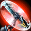
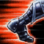
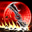

Draven
El Ejecutor Glorioso
A diferencia de su hermano Darius, la victoria en combate nunca era suficiente para Draven. Ansiaba el reconocimiento, la fama y la gloria. Primero buscó la grandeza en el ejército noxiano, pero allí no apreciaron en absoluto su pasión por el drama. Ansioso por encontrar un modo de demostrar al mundo quién era Draven, todos sus esfuerzos se volcaron en el sistema penitenciario. Allí, por fin consiguió labrarse la fama que tanto deseaba, al convertir las tediosas ejecuciones en un espectáculo de primera categoría.
En su primera ejecución, Draven dejó estupefactos a los espectadores cuando le ordenó al prisionero que corriera para salvar su vida. Justo antes de que el hombre estuviese lo bastante lejos como para desaparecer de su vista, Draven acabó con él con un impecable lanzamiento de su hacha. Las ejecuciones de Draven no tardarían en convertirse en un desafío en el que los prisioneros noxianos debían correr en un último intento por salvar su vida. Transformó este desafío en un concurso donde él era la estrella y convirtió las ejecuciones en una forma de entretenimiento muy popular. Los espectadores enloquecían con el espectáculo, mientras los desesperados prisioneros luchaban por huir de él. Pero nunca lo conseguían. Tras rechazar los negros y solemnes uniformes de los ejecutores noxianos, Draven decidió portar trajes brillantes y desarrolló sus propios y llamativos movimientos, todo con el único objetivo de hacerse notar. Las multitudes se apiñaban para ver a Draven en acción y pronto se corrió la voz sobre sus hazañas por todo el territorio. A medida que aumentaba su popularidad, también lo hacía su ya de por sí enorme ego. Era el centro de todas las miradas. No tardaría en llegar el día en el que la población de Noxus se antojaba insuficiente para su ambición. Se juró que las gloriosas hazañas de Draven llegarían hasta el último rincón del planeta.
Draven se gana la Adoración de sus incondicionales seguidores cuando atrapa un Hacha giratoria o mata a un súbdito, monstruo o torre. Asesinar a campeones enemigos le otorga a Draven oro adicional en función de la Adoración que tenga.

Hacha giratoria
Coste: 45 de maná
Alcance: 300
El próximo ataque de Draven inflige daño físico adicional. Tras golpear al objetivo, el hacha saldrá volando por los aires. Si Draven la atrapa, preparará automáticamente otra Hacha giratoria. Draven puede tener dos Hachas giratorias a la vez.
El próximo ataque de Draven inflige 45/55/65/75/85% Daño de Ataque de daño físico adicional. La bonificación es igual al 45/55/65/75/85% de su daño de ataque total.Tras golpear al objetivo, el hacha saldrá volando por los aires. Si Draven la atrapa, preparará automáticamente otra Hacha giratoria.Draven puede tener dos Hachas giratorias a la vez.

Subidón de adrenalina
Coste: 40 de maná
Alcance: 1000
Draven aumenta su velocidad de movimiento y su velocidad de ataque. La bonificación de velocidad de movimiento disminuye rápidamente con el tiempo. Al atrapar un Hacha giratoria, se recuperará el enfriamiento de Subidón de adrenalina.
Draven aumenta un 40/45/50/55/60% su velocidad de movimiento durante 1.5 s y un 20/25/30/35/40% su velocidad de ataque durante 3 s. La bonificación de velocidad de movimiento disminuye rápidamente con el tiempo.Al atrapar un Hacha giratoria, se recuperará el enfriamiento de Subidón de adrenalina.
A un lado
Coste: 70 de maná
Alcance: 1050
Draven lanza su hacha, infligiendo daño físico a los objetivos golpeados y echándolos a un lado. Los objetivos impactados se ven ralentizados.
Draven lanza sus hachas e inflige 70/105/140/175/210 (+50% Daño de Ataque adicional) puntos de daño físico a los objetivos golpeados, además de echarlos a un lado. Los objetivos quedan ralentizados en un 20/25/30/35/40% durante 2 s.

Espiral de muerte
Coste: 100 de maná
Alcance: 20000
Draven lanza dos gigantescas hachas para infligir daño físico a cada unidad alcanzada. Las hachas regresan a Draven tras golpear a un campeón enemigo, llegar a su alcance máximo, o al reactivar la habilidad. Las hachas infligen menos daño por cada unidad que golpean; cuando cambian de sentido la cuenta parte de cero.
Draven lanza dos hachas gigantescas que infligen 175/275/375 (+110% Daño de Ataque adicional) puntos de daño físico a cada unidad alcanzada.Espiral de muerte va cambiando lentamente de velocidad y las hachas regresan a Draven tras golpear a un campeón enemigo. Draven también puede activar esta habilidad mientras las hachas están en el aire para hacer que vuelvan antes. Inflige un 8% menos de daño por cada unidad que golpea (mínimo 40%) y se reinicia cuando el hacha cambia de dirección.